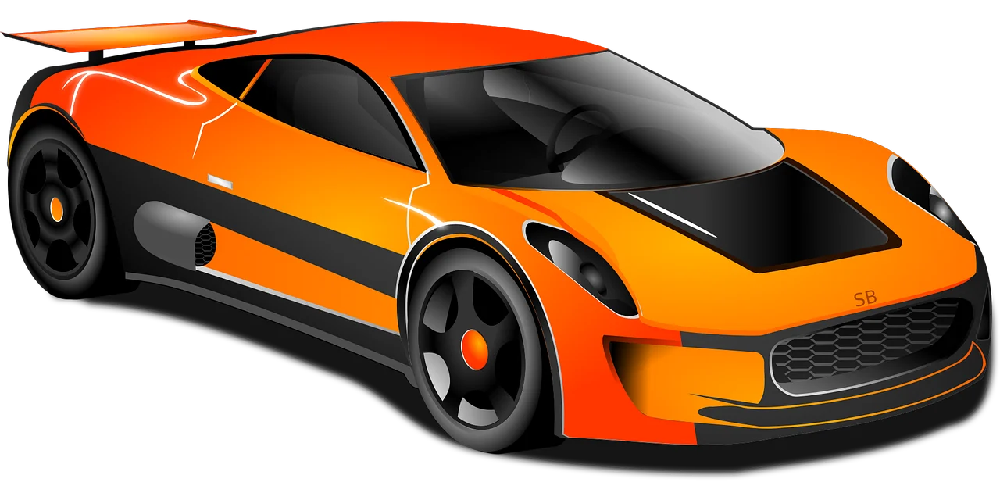
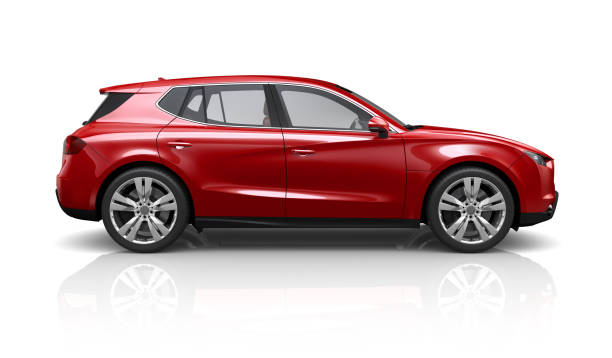

Miguel Angel
Dueño
Bienvenido a Inka Motors: Pasión, Calidad y Confianza Sobre Ruedas
En Inka Motors creemos que un automóvil representa mucho más que un simple medio de transporte. Un vehículo forma parte de la vida diaria de las personas, acompaña momentos importantes y se convierte en el compañero ideal para cumplir metas, viajar, trabajar y compartir experiencias inolvidables junto a la familia y amigos. Por ello, nuestra empresa trabaja constantemente para brindar a cada cliente una experiencia única, basada en la confianza, la calidad y la satisfacción. Desde nuestros inicios, hemos tenido el compromiso de ofrecer vehículos modernos, seguros y en excelentes condiciones, pensando siempre en las necesidades de cada conductor y en la importancia de realizar una compra segura y confiable.

Nuestra pasión por el mundo automotriz nos impulsa a seguir creciendo e innovando cada día. En Inka Motors entendemos que cada cliente tiene gustos y necesidades diferentes, por eso contamos con una variedad de vehículos que se adaptan a distintos estilos de vida. Ya sea que busques un automóvil elegante para la ciudad, una camioneta espaciosa para viajes familiares o un vehículo cómodo y eficiente para el trabajo diario, nuestro objetivo es ayudarte a encontrar la mejor opción. Además, nos esforzamos por mantener altos estándares de calidad en cada automóvil que ofrecemos, realizando revisiones y controles que garanticen seguridad, rendimiento y comodidad al conducir. Uno de los aspectos más importantes para nosotros es la confianza que depositan nuestros clientes en nuestra empresa. Sabemos que adquirir un vehículo es una decisión importante y muchas veces representa un gran esfuerzo, por eso brindamos una atención personalizada y transparente durante todo el proceso. Nuestro equipo está preparado para orientar y asesorar a cada persona de manera responsable, resolviendo dudas y ofreciendo información clara para que cada cliente pueda tomar la mejor decisión según sus necesidades y presupuesto. Más que una venta, buscamos crear relaciones duraderas basadas en el respeto, la honestidad y el compromiso.

Uno de los aspectos más importantes para nosotros es la confianza que depositan nuestros clientes en nuestra empresa. Sabemos que adquirir un vehículo es una decisión importante y muchas veces representa un gran esfuerzo, por eso brindamos una atención personalizada y transparente durante todo el proceso. Nuestro equipo está preparado para orientar y asesorar a cada persona de manera responsable, resolviendo dudas y ofreciendo información clara para que cada cliente pueda tomar la mejor decisión según sus necesidades y presupuesto. Más que una venta, buscamos crear relaciones duraderas basadas en el respeto, la honestidad y el compromiso. Además de ofrecer vehículos de calidad, en Inka Motors también buscamos compartir información útil y valiosa para todos los amantes del mundo automotriz. A través de nuestro blog podrás encontrar consejos de mantenimiento, recomendaciones para el cuidado del vehículo, noticias sobre nuevas tecnologías automotrices y datos importantes que te ayudarán a mantener tu automóvil en las mejores condiciones. Consideramos que un conductor informado puede disfrutar mejor de su vehículo y prolongar su vida útil, por eso queremos convertir este espacio en un lugar donde nuestros visitantes puedan aprender y mantenerse actualizados sobre las novedades del sector automotor.